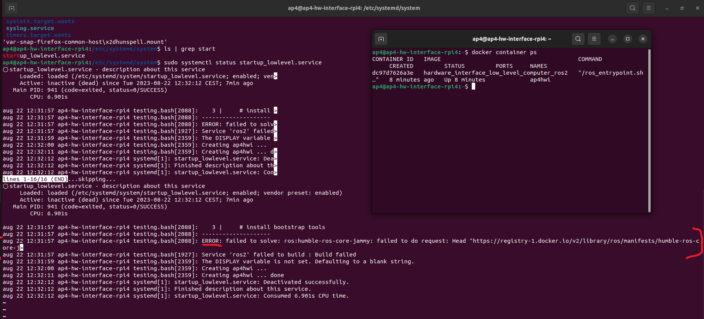

Test and Debugging of Hardware Interface Low Level Computer
This document aims to describe how to test and debugg the low level software if any error occours. If you stumble upon a new error which has been been described below, please add it to the documentation and how you resovled it. It will help future project members.
Raspberry Pi 4b Bootup failed
The Raspberry Pi 4b can fail to boot-up if there are corrupted files on the micro SD card or if the micro SD card has run out of empty storage. The docker temporary files can grow very large in size.
This is a known issue and is noted down in ISSUES_AND_FUTURE_WORK.md.
Connect a display, mouse and keyboard and resolve issues presented in terminal. You probably have to clean something in the filesystem.
If this fails, there is a backup micro SD card containing a copy of the system availible here for download. Make sure you have permission to access this project on Infotiv sharepoint. If this does not work, the procedure of setting up a fresh Raspberry Pi 4b is described in SETUP_OF_RASPBERRY_PI.md located in this directory.
Software container not started?
Has the Raspberry Pi 4b booted up without automatically starting the low level software docker container?
There could be several causes for this, some of them are;
- Linux startup service did not run during boot-up
- docker container could not be built due to;
- Lack of Internet connection
- Errors in dockerfile configuration
- Corrupted files on micro SD card.
First, check if the container is running or not using the following command.
docker container ps
If the docker container is running, the expected output would be:
CONTAINER ID IMAGE COMMAND CREATED STATUS PORTS NAMES
xxxx hardware_interface_low_level_computer_ros2 xxxx 10 seconds ago Up 10 seconds ap4hwi
If the docker container is not running there could be two causes:
- The container is still being built (Can take up to 10 minutes when building from scratch)
- The container failed to build
Either of these alternatives can be verified by looking at the status of the startup service. In a terminal check the status of the serive.
sudo systemctl status startup_lowlevel.service
output:
 In the terminal it would explicity say if something has failed and the service did not start properly. It will also explain exactly what failed. Note that it says ERROR in the screenshot above. Something is therefore wrong! Resolve any issues if present and reboot Raspberry Pi 4b.
No ROS2 topic shows in terminal
The following command shall display what topics are active on the ROS2 network.
ros2 topic list
The expected output would be similar to:
This section describes how to troubleshoot no topic showing up at all. If some topics show up but not the one you expected, look at ROS2 Node did not start when starting container section in this documentation file.
Firstly, make sure you have configured the ROS_DOMAIN_ID environemnt variable
export ROS_DOMAIN_ID=1
If no ROS2 topic still doesn't show up
ROS2 Node did not start when starting container
First make sure that only a specific node does not start up, if other nodes have started up but not the one you are looking for you need to look in the launch file that starts up the hardware interface software.
Make sure it is configured to automatically start by looking in the launch hwi software package autonomous_platform\Hardware_Interface_Low_Level_Computer\ap4_hwi_code\ap4hwi_ws\src\launch_hwi_software_pkg\launch
Odometry testing and calibration
Distance testing
In order to get the AD algorithm to work properly we need to have a position system for the Gokart. The Gokarts position is updated by publishing its new positions to the /odom topic. The actual position is calculated in real time by using the Gokarts speed sensors and steering angle sensor that are mounted on the wheels and the steering motor.
This guide describes how you can test and verify that the odometry calculations are correct and that the actual position of the Gokart are being correctly updated to the /odom topic. The X position for the Gokart is tested by using a attatchment on the wheel (Se video below) that counts the exact amount of turns that the wheels are turing during the test. By knowing the wheels circumference you can easy check if the odometry is being updated correctly.

-
Mount the wheel turn counter on the backwheel
-
Decide how many turns you want to measure
-
Calculate the actual distance the Gokart will move by taking: number_of_turns*circumference = total_distance
-
Start the Gokart and listen to the /odom topic by running:
bash
ros2 topic echo /odom
-
Move the Gokart forward exact the amount of wheel turns you want by looking at the wheel counter
-
Kill the /odom listener and scroll up to the latest updated odom in the terminal
-
Compare the result for the updated odom in the terminal by your calculated distance earlier. These two should more or less be the same.
Steering angle tesing
To test and verify the steering angle that later updates the Gokart position we need to manually measure the angle on the steering wheels when turning with the xbox box controller. We measuered the steering angle manualy by two rulers and measure the angle with a "gradskiva". We then compared the angle with the angle showed up in the Get_SteeringAngle topic. This is not the best way to do it and there is probably a more consequent way to do this.